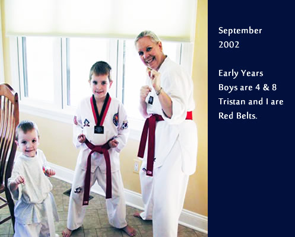
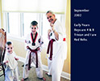
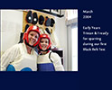
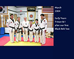
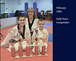
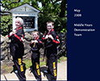
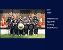
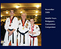
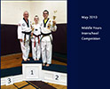
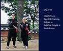

Home
Introduction
About Me
Disclaimer
☰
Becoming a Black Belt
Muscular Fitness
Flexibility and Balance
Stretching
Physical Skills
Cardio and Endurance
Injury Prevention and Treatment
Choosing a School
Weapon Training
Recommended Reading
Resources
Training in South Korea
Our Taekwondo Journey

 
 

 

